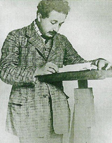
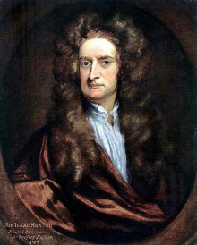
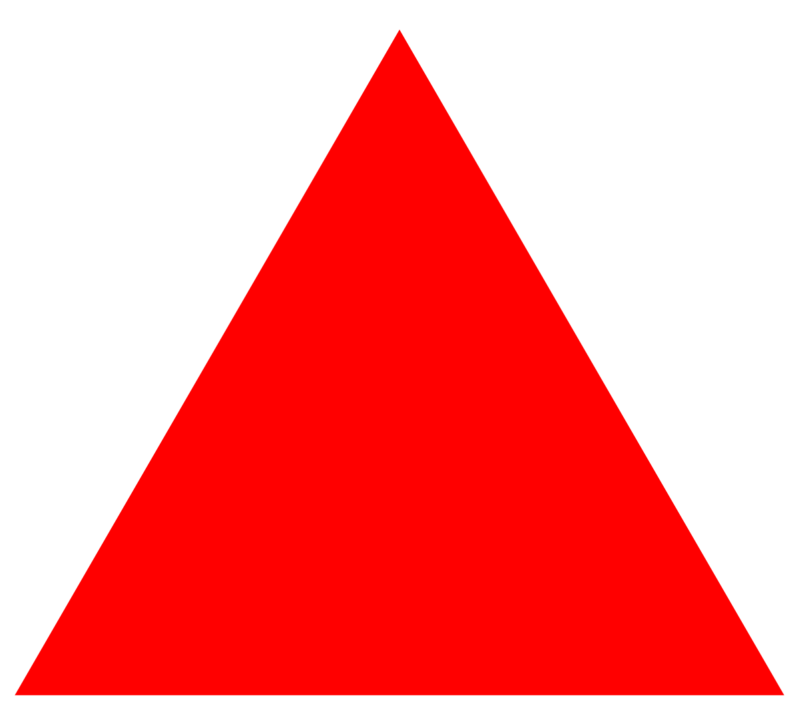
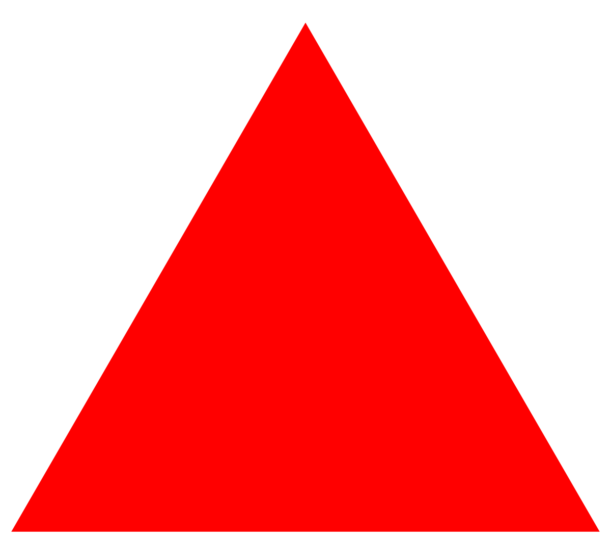

Список известных ученых:

Один из величайших физиков-теоретиков ХХ века. Родился в Ульме, Германия; жил и работал в Германии, Швейцарии и США. Сын владельца маленького электрохимического заводика в Мюнхене; в этом городе и началось его формальное образование. После того, как семейный бизнес пришел в полный упадок, семья Эйнштейнов перебралась в Италию, а юный Альберт отправился в Цюрих (Швейцария), где и продолжил формальное образование. (Тут самое время развенчать устойчивый миф о том, что в юности Эйнштейн был нерадивым студентом и даже получал двойки по математике. С учебой у Эйнштейна проблем не возникало, зато он имел массу дисциплинарных взысканий, однако проблемы с администрацией закостенелой в те годы германской системы образования возникали у многих студентов, отличавшихся свободомыслием.)
В 1901 году Эйнштейн устроился на работу в Швейцарское патентное бюро в Берне и в том же году получил швейцарское гражданство по причине острого недовольства жестким и милитаризированным режимом, воцарившимся в Германии. За семь лет, проведенных на этой должности, он и внес свой основной вклад в науку, включая теоретическое объяснение фотоэлектрического эффекта и броуновского движения и специальную теорию относительности. В 1909 году, получив признание в академических кругах, стал профессором Цюрихского, затем Пражского университетов и, наконец, возглавил Институт физики им. Кайзера Вильгельма в Берлине. Ранний брак с однокурсницей Милевой Марич (Mileva Maric) сложился неудачно; в 1919 году Эйнштейн развелся со своей первой женой и вскоре женился на своей кузине Эльзе.

Англичанин, которого многие считают вообще величайшим ученым всех времен и народов. Родился в семье мелкопоместных дворян в окрестностях г. Вулсторпа (графство Линкольншир, Англия). Отца в живых не застал (тот умер за три месяца до рождения сына). Вступив в повторный брак, мать оставила двухлетнего Исаака на попечение его бабушки. Своеобразное эксцентричное поведение уже взрослого ученого многие исследователи его биографии как раз и приписывают тому факту, что до девятилетнего возраста, когда последовала смерть его отчима, мальчик был полностью лишен родительской заботы.
Какое-то время юный Исаак изучал премудрости сельского хозяйства в ремесленном училище. Как это часто случается с великими впоследствии людьми, о его чудачествах в ту раннюю пору его жизни до сих пор ходит масса легенд. Так, в частности, рассказывают, будто однажды его отправили на выпас сторожить скот, который благополучно разбрелся в неизвестном направлении, пока мальчик сидел под деревом и увлеченно читал заинтересовавшую его книгу. Так это или не так, но тягу подростка к знаниям вскоре приметили — и отправили обратно в гимназию г. Грантем, по окончании которой юноша успешно поступил в Тринити-колледж Кембриджского университета.
log28
23
источник цитаты
Если не знаешь что написать, напиши китайскую народную мудрость - китайская народная мудрость
 

Информация взята с сайта
Контакты: телефон
почта